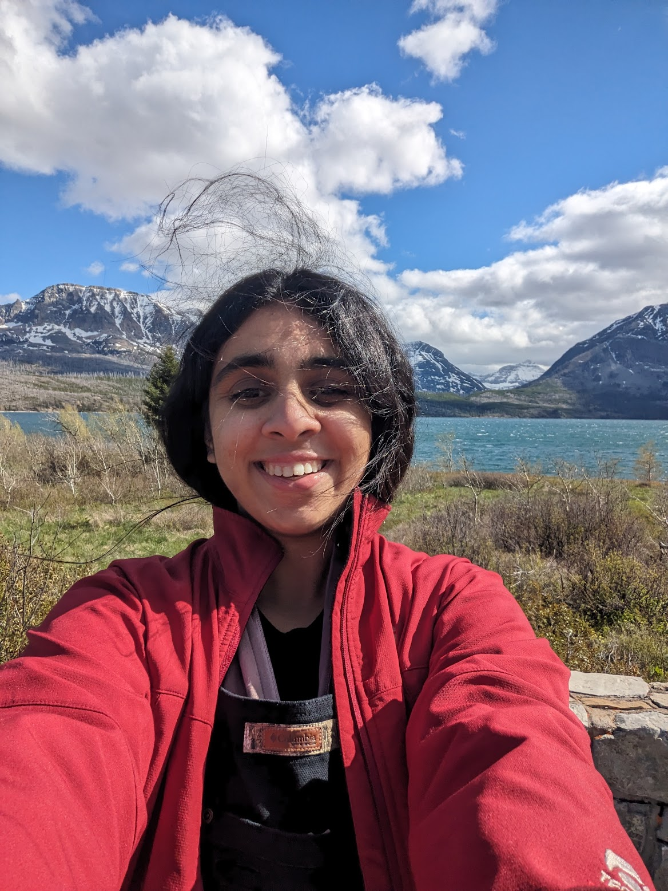

Updates
- [April 2026] Gave a talk for Khoury Student Seminar! Find slides here
- [March 2026] Chain of Thought Steering paper accepted to Logical Reasoning Workshop @ ICLR 2026!
- [Jan 2026] New Blog out on my substack: LLM Systems: An Untapped Lever for AI Safety
- [August 2025] Two of my papers have been accepted to EMNLP Findings 🎉.
- [July 2025] Selected as a fellow/mentee for MARS.
- [December 2024] Paper on evaluating models for cultural robustness accepted at SafeGenAI workshop @NEURIPS 2024
- [September 2024] Started my PhD at Northeastern University.
- [August 2023] Started working as a Software Develpoment Engineer at ASCS @ Amazon
- [February 2023] Started as a researcher and data engineer CLAWS Lab Georgia Tech
- [December 2022] Graduated with MS CS from Georgia Tech

Ananya Malik
CS PhD Student · Khoury College, Northeastern University
Advised by Prof. Mai ElSherief
Updates
- [April 2026] Gave a talk for Khoury Student Seminar. Slides here.
- [March 2026] Chain of Thought Steering accepted to Logical Reasoning Workshop @ ICLR 2026.
- [January 2026] New essay: LLM Systems: An Untapped Lever for AI Safety.
- [August 2025] Two papers accepted to EMNLP Findings 2025.
- [July 2025] Selected as a fellow/mentee for MARS.
- [December 2024] Cultural robustness paper accepted at SafeGenAI Workshop @ NeurIPS 2024.
- [September 2024] Started PhD at Northeastern University.
- [August 2023] Joined ASCS @ Amazon as Software Development Engineer.
- [February 2023] Joined CLAWS Lab at Georgia Tech as researcher and data engineer.
- [December 2022] Graduated with MS CS from Georgia Tech.
About Me
I am a second-year Computer Science PhD student at Northeastern University’s Khoury College of Computer Science, advised by Prof. Mai ElSherief.
Summer 2026: Applied Research Intern at Adobe, working on latency optimization with Arko Mukherjee, Junxuan Li, and Subhojyoti Mukherjee.
Previously, I was a Software Engineer at Amazon (Seattle) within the Selection Monitoring and Catalog Systems team. I hold an MS in CS from Georgia Tech, where I conducted research with Prof. Srijan Kumar in the CLAWS Lab. I also serve as a research mentor at SimPPL.
Research Interests
I design AI systems that are safer, more controllable, and socially and cognitively aligned.
Persona Representation & Personalization
- Human Personas: Investigating how models internalize human traits mechanistically and behaviorally, using latent subspaces for precise behavioral control.
- User Context: Evaluating how demographics, dialect, and identity affect model behavior and empathy variation.
- World Maps: Studying how geographic and spatial knowledge is structured within model weights.
Cognitive & Social Alignment
- Cognitive-Inspired LLMs: Grounding model architecture and optimization in human cognition to improve reasoning capabilities and complex problem-solving.
- Inference-Time Steering: Using activation patching and causal mediation analysis to mitigate bias and modulate behavior without retraining.
- Robust Reasoning: Developing lightweight interventions to ensure consistent, human-aligned chain-of-thought processes.
Computational Social Science & Safety
- Healthy Communities: Developing NLP tools to detect nuanced online phenomena like dog whistles and hate speech reasoning.
- Behavioral Detection: Identifying, studying, and neutralizing adversarial, harmful, or negative social behaviors in LLMs.
- Intent Analysis: Applying optimized prompts to analyze social trends, such as digital expressions of motherhood burnout.
Publications
Malik, Ananya, Nazanin Sabri, Melissa Karnaze, and Mai Elsherief. Are LLMs Empathetic to All? Investigating the Influence of Multi-Demographic Personas on a Model's Empathy. Paper
Malik, Ananya, Sharma, Kartik, Ng Lynette Hui Xian, Bhatt, Shaily. Who Speaks Matters: Analysing the Influence of the Speaker's Ethnicity on Hate Classification. Paper
Malik, Ananya. Evaluating Large Language Models through Gender and Racial Stereotypes. Paper
Amogh Parab, Ananya Malik, Arish Damania, Arnav Parekhji. Successive Image Generation from a Single Sentence. Paper
A. Malik, Y. Javeri, M. Shah, R. Mangrulkar. Impact Analysis of Covid-19 News Headlines on Global Economy. Cyber-Physical Systems for COVID-19, Elsevier. Paper
A. Malik. Survey paper on applications of generative adversarial networks in the field of social media. Paper
Academic Service & Groups
Affiliations
Teaching Assistance
- NEU: CS 5200: Database Management Systems · CS 4100: Foundations of AI (Spring 2025)
- Georgia Tech: CS 3600: Intro to AI (Spring/Fall 2022)
Talks & Presentations
- Lecture: Advanced Topics in AI (Slides)
- NeurIPS SafeGenAI Workshop: Who Speaks Matters: Analysing the Influence of the Speaker’s Ethnicity on Hate Classification (Presentation & Slides)